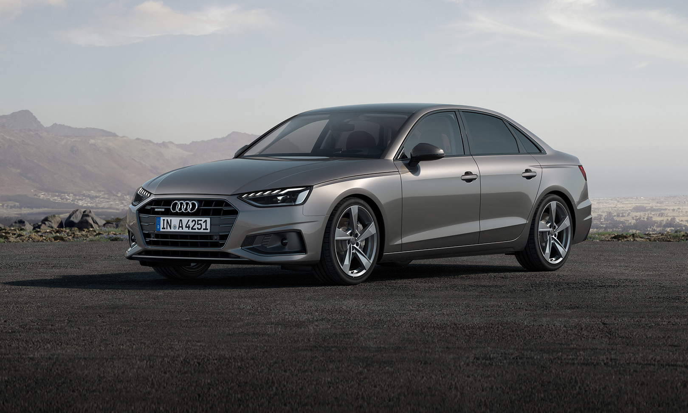

Audi A4 40 TDI

Огляд Audi A4 40 TDI
Audi A4 40 TDI - це представник престижного сімейства автомобілів Audi A4, оснащений дизельним двигуном об'ємом 2.0 літра і системою TDI. Цей седан відзначається стильним дизайном, високоякісним інтер'єром та передовими технологіями. Завдяки дизельному двигуну, автомобіль може вражати ефективністю пального та динамікою руху. Він також може володіти рядом функцій безпеки та комфорту, що робить його привабливим вибором для тих, хто цінує високий рівень якості та елегантного стилю.
Ціна: $55,000